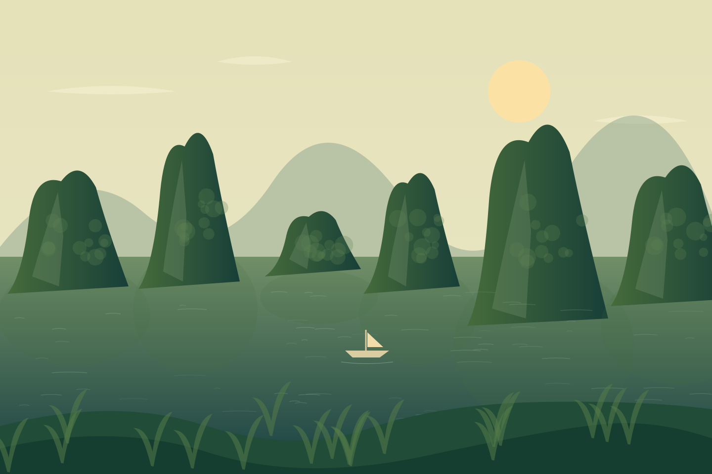

ĐỪNG CHỈ ĐI QUA.
Hãy ở lại trong cảm xúc.
Hãy ở lại trong cảm xúc.
MỘT LỜI NHẮN NHỎ
Đất nước đẹp.
Đẹp hơn khi
ta đi tử tế.
Ghé một quán nhỏ. Hỏi một câu chuyện. Giữ lại bức ảnh, mang rác về và để thiên nhiên được nguyên vẹn.
Những chuyến đi đáng nhớ thường bắt đầu từ sự tò mò — và ở lại nhờ sự trân trọng.
Tìm một nơi để bắt đầu ↗